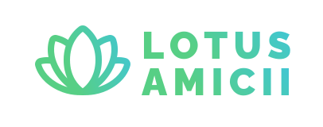
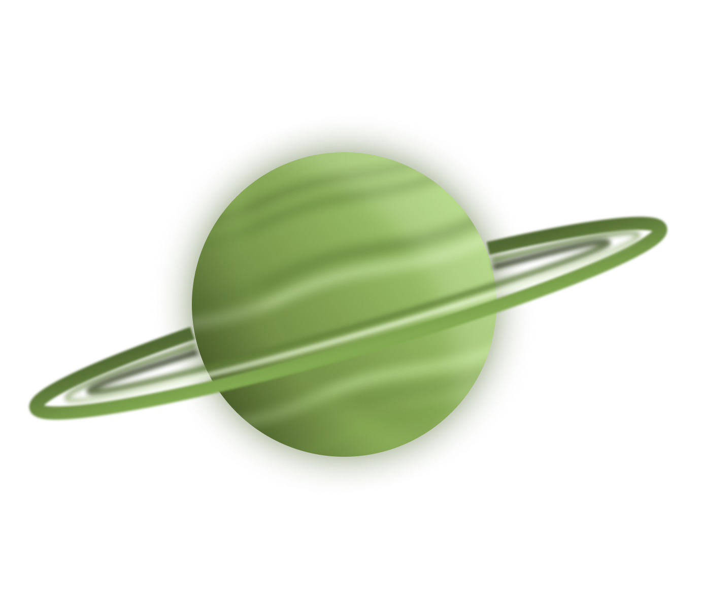

Lotus amiciiДелимся страстью, объединяем сердца..
Lotus Amicii — это больше, чем просто платформа для блогов. Это сообщество единомышленников,
где каждый может найти свой голос и поделиться своей историей. Здесь музыка становится мостом между сердцами,
а увлечения — ключом к новым знакомствам.
Кто мы такие?!

Миссия
Lotus Amicii — это не просто платформа для блогов. Мы создаем пространство,
где музыка и увлечения становятся мостом между людьми, объединяя их общими интересами и
страстью к творчеству.
Наша история
Всё началось с простой идеи: создать место, где каждый любитель музыки может поделиться своими мыслями,
опытом и страстью с единомышленниками. Сегодня Lotus Amicii вырос в масштабное сообщество, объединяющее
тысячи людей по всему миру.
Команда профессионаловЗа успехом платформы стоит команда увлеченных людей:
Музыкальные эксперты — помогают
авторам создавать качественный контент Технологи — обеспечивают стабильную работу платформы
Сообщества — развивают взаимодействие между участниками
Принципы работы
Открытость — доступ к платформе для всех желающих
Поддержка — помощь начинающим авторам
Честность — прозрачность в отношениях с пользователями
Развитие — постоянное совершенствование платформы
Вдохновение — создание среды, где каждый может найти мотивацию
Видение будущего
Мы стремимся стать ведущей платформой для музыкальных энтузиастов, где каждый найдет единомышленников
и возможность реализовать свой творческий потенциал. Наша цель — создать пространство, где музыка объединяет
людей, а увлечения становятся источником вдохновения.